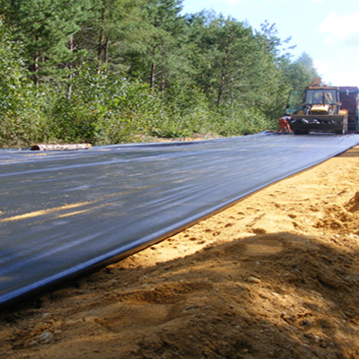

Clasificación geosintéticos.
Geosintéticos Geotexan
Geotextiles no tejidos agujados con posterior termofusión: Geotesan NT
Geotextiles tejidos: Geotesan LF
Geotextiles Antifisuras: Geotesan CR
Geotextiles tejidos con impregnación impermeable: Estanco Tejido LF C1
Geocompuestos drenantes oon estructura alveolar simétrica:
- Para utilización en vertical: Geotesan Pac / Geotesan Cordrain.
- Para utilización en taludes y horizontal: Geotesan Napa Solpac.
- Para utilizaoion en zanjas drenantes:
- Con tubería:
- Geotesan PacDran.
- Geotesan RoadDrain.
- Sin tubería:
- Geotesan Stabidrain
- Mechas drenantes para reducir el tiempo de consolidaoion de terraplén: Solpac.
- Drenantes de aglomerado Geotesan Asfal Drain.
Geocompuestos de refuerzo Geotesan CRP
Geooompuestos de impermeabilización
Geotesan Geobent AS
Produotos relacionados:
- Geomallas de refuerzo: Geotexgrid
- Geoceldas control de erosión: Geotexcelda
- Mallas volumétrioas: Geotesan Volumétrica
Geomembranas Pead: Geotesan PEAD
